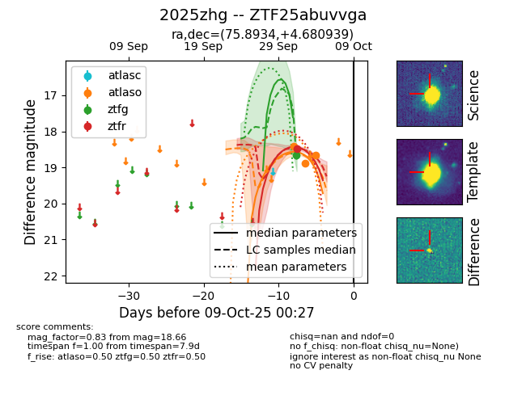
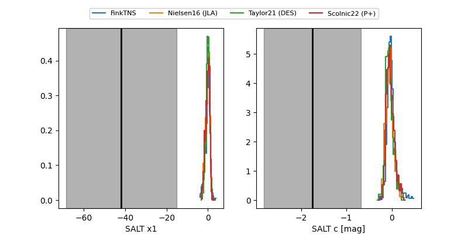

FINK: ZTF25abuvvga
Lasair: ZTF25abuvvga
ALeRCE: ZTF25abuvvga
TNS: 2025zhg
YSE: 2025zhg
ZTF25abuvvga (ztf,fink)
2025zhg (tns,yse)
equatorial (ra, dec) = (75.8934,+4.68094)
galactic (l, b) = (195.5123,-21.40878)


last atlaso=18.66, ztfg=18.65, ztfr=18.48
3 atlaso, 1 ztfg, 1 ztfr detections